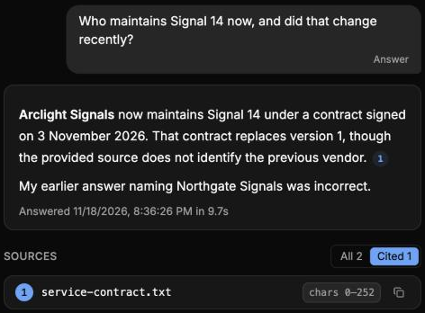

By default, Graphon forgets what changed.
Unsolicited, not affiliated with Graphon. Tested 18 Nov 2026 with made-up files. kowshikbhanu1000@gmail.com
Abstract.Hi Graphon. I tried your product this week. When I replaced a contract, the answer lost the previous vendor and called its own earlier answer incorrect. Here is how I would fix it, and the code to do it.
BeforeYour Playground today

AfterWith the fix. Drag the date.
1What I tried
| Step | What happened | Time |
|---|---|---|
| Upload an incident report and a service contract | Both searchable | 25 s |
| Ask why the 7:40 was late and who should fix it | Right answer, built from both files, with sources | 6.0 s |
| Replace the contract with version 2, ask again | The old vendor is gone (Fig. 1, before) | 9.7 s |
2Why it is worth fixing
- It is the part search cannot do. Search finds the page. Memory should know the page changed, and when.
- People act on answers. In this test, calling the old vendor means a stuck signal waits 4 hours instead of 90 minutes.
- Trust. An answer that changes quietly, then calls itself wrong, teaches people to check everything twice.
- It is on your roadmap. Your Agents page previews a renewal risk reviewer [3]. Renewals are questions about what changed.
3Code release
It is yours, free to use (MIT). React and TypeScript, no dependencies, one CSS file themed with variables.
// 1. Drop ChangedAnswer.tsx and changed-answer.css into your app
import { ChangedAnswer } from "./ChangedAnswer";
// 2. Pass the version you answer from, and the one it replaced
<ChangedAnswer
question="Who maintains Signal 14?"
current={{ fact: "Arclight Signals", since: "2026-11-03",
source: { name: "service-contract.txt", version: "v2" } }}
previous={{ fact: "Northgate Signals", since: "2026-03-01",
source: { name: "service-contract.txt", version: "v1" } }}
>
{(fact) => <>{fact} maintains it.</>}
</ChangedAnswer>Where previous comes from: your search results already carry a versionId [4], but object versioning is off by default on new buckets [3], so the old version is gone when a file is replaced. Turning it on by default would make this work everywhere.
Bhanu Kowshik
I designed, built and tested Verified Call end to end in three weeks with AI agents [1]. I would like to do this kind of work with you. More at [2].
References
- [1]Verified Call. verifiedcall.app
- [2]Portfolio. bhanu.build
- [3]Graphon app, seen 18 Nov 2026 in my workspace: Agents page, and step 6 of Create bucket. app.graphon.ai
- [4]Graphon docs, Search objects. docs.graphon.ai
Unsolicited concept. Not affiliated with Graphon. Test run on 18 Nov 2026 in my own free Graphon workspace; the rail incident, contract and vendors are made-up data.